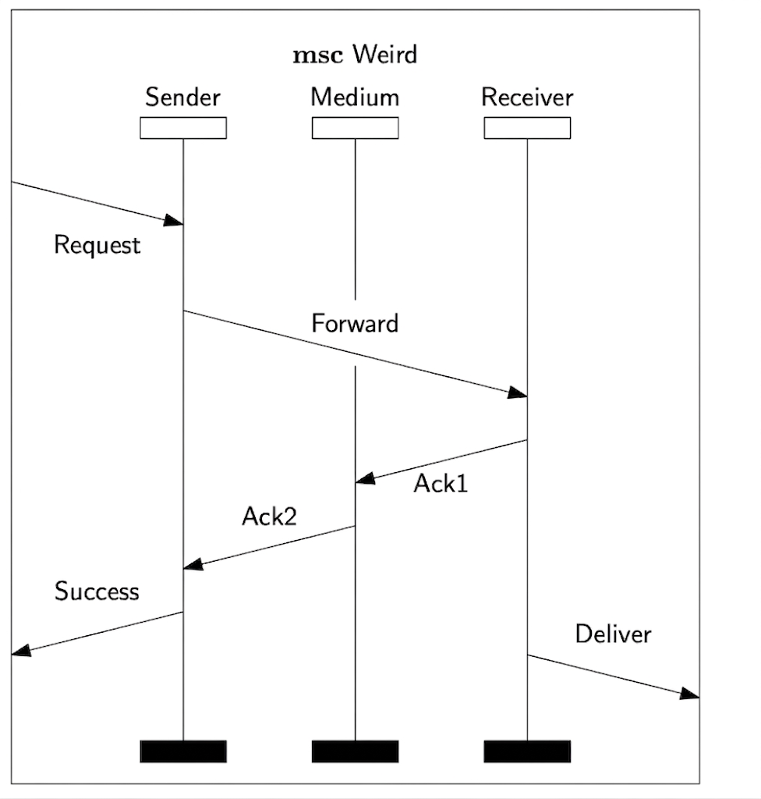
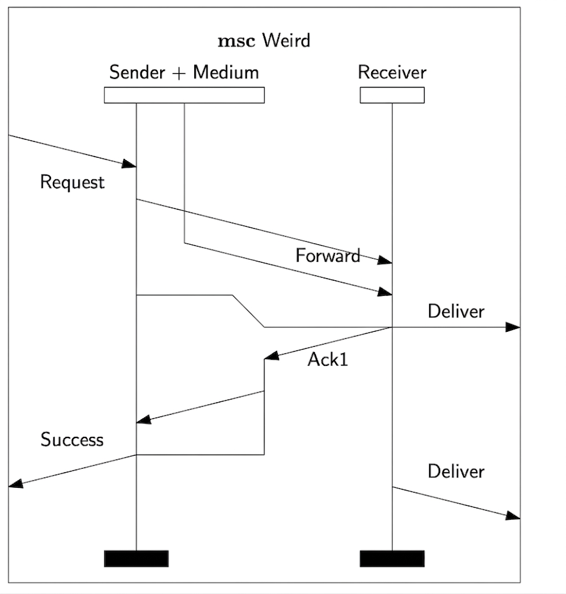
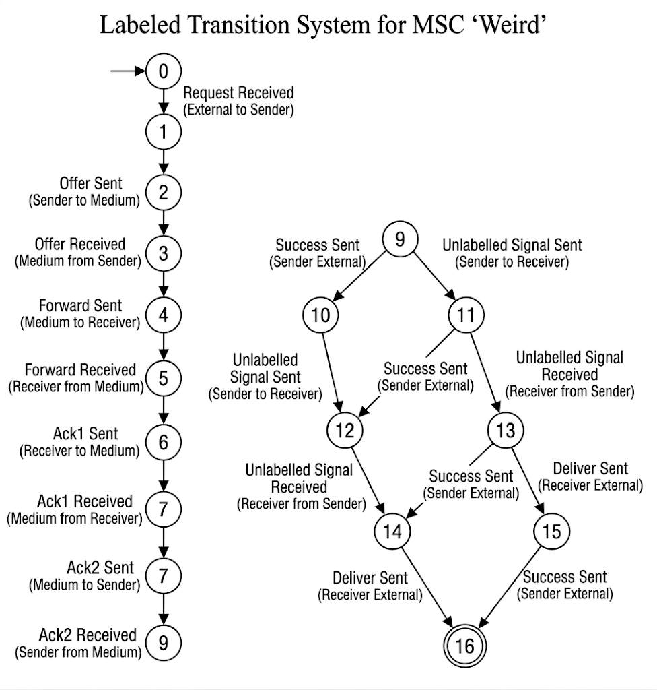

Experiments / Gemini 3 - Thinking / Example 9.docx
Hi, please consider this picture from a Message Sequence Chart. Please identify the events in this diagram.

In the context of a Message Sequence Chart (MSC), an "event" typically refers to the sending or receiving of a signal along a lifeline.
Based on the diagram titled "msc Weird," here are the identified events categorized by the lifelines (Sender, Medium, and Receiver).
1. Sender Lifeline
Receive Request: An incoming message from the environment to the Sender.
Send Offer: An outgoing message from the Sender to the Medium.
Receive Ack2: An incoming message from the Medium to the Sender.
Send Success: An outgoing message from the Sender to the environment.
2. Medium Lifeline
Receive Offer: An incoming message from the Sender.
Send Forward: An outgoing message to the Receiver.
Receive Ack1: An incoming message from the Receiver.
Send Ack2: An outgoing message back to the Sender.
3. Receiver Lifeline
Receive Forward: An incoming message from the Medium.
Send Ack1: An outgoing message to the Medium.
Send Deliver: An outgoing message to the environment.
The "Weird" Element
The chart is likely labeled "Weird" because of the visual connection between the Success and Deliver events.
In standard MSCs, these would be two independent events.
However, here they are connected by a single line that passes through the Receiver lifeline. This suggests a synchronized event or a shared global signal where the Sender signaling "Success" is the same physical or logical action that triggers the "Deliver" output at the Receiver.
Summary of Message Flows
If you are looking for the sequence of communication (the "traces"), the order of events follows the vertical timeline from top to bottom:
Request (Environment $\rightarrow$ Sender)
Offer (Sender $\rightarrow$ Medium)
Forward (Medium $\rightarrow$ Receiver)
Ack1 (Receiver $\rightarrow$ Medium)
Ack2 (Medium $\rightarrow$ Sender)
Success/Deliver (Synchronized output from Sender and Receiver to Environment)
Question:
What is the correct ordering between sending Offer and sending Deliver?
Answer:
Based on the standard rules of Message Sequence Charts (MSCs), where time flows from top to bottom, the correct ordering is:
Sending "Offer" happens before sending "Deliver."
Here is the breakdown of why this is the case based on the visual and logical flow:
1. Vertical Time Flow
In an MSC, the vertical axis represents the progression of time. The point where the Offer arrow leaves the Sender lifeline is physically higher on the diagram than the point where the Deliver arrow leaves the Receiver lifeline.
2. Causal Chain
Even if we ignore the vertical height, there is a clear causal "chain of events" that forces this order:
Sender sends Offer to the Medium.
The Medium must receive the offer before it can send the Forward message.
The Receiver must receive the Forward message before it can begin the process of sending an acknowledgment or eventually reaching the Deliver state.
3. The Logical Sequence
Tracing the path through the lifelines:
Event A: Send Offer (Sender)
Event B: Receive Offer (Medium)
Event C: Send Forward (Medium)
Event D: Receive Forward (Receiver)
... (Acks and Success messages occur) ...
Event E: Send Deliver (Receiver)
Since Event A is at the very beginning of this causal sequence and Event E is at the very end, sending Offer is strictly ordered before sending Deliver.
Question:
What is the correct ordering between sending Success and sending Deliver?
Answer:
In this specific diagram, the ordering between sending Success and sending Deliver is strictly defined by both vertical position and the flow of the message line.
The correct ordering is: Sending "Success" happens before sending "Deliver."
Here is why:
Vertical Time Axis: In Message Sequence Charts, time progresses from the top of the page to the bottom. The point where the signal originates on the Sender lifeline (labeled "Success") is physically higher than the point where the signal departs from the Receiver lifeline (labeled "Deliver").
The Directed Path: Notice the arrowheads and the "kink" in the line. The signal starts at the Sender, travels toward the environment (the left arrow), but also branches across to the Receiver. The line only reaches the Receiver’s lifeline after it has passed the Sender’s lifeline.
Causal Dependency: The visual design implies that the "Success" event at the Sender is the trigger for the "Deliver" event at the Receiver. In the logic of this "Weird" chart, the Receiver cannot signal a delivery until it has been "notified" by the horizontal signal coming from the Success event.
Summary Table
| Event | Lifeline | Relative Timing |
|---|---|---|
| Sending Success | Sender | Earlier (Higher on the axis) |
| Sending Deliver | Receiver | Later (Lower on the axis) |
Quick Tip: Whenever you see a horizontal or sloped line connecting two lifelines in an MSC, always follow the arrow. If there is no arrow, the vertical "drop" from left to right (or vice-versa) tells you which side acted first.
Question:
Based on the diagram above, generate a message sequence chart in which message Offer is abstracted away. Please produce the resulting MSC after abstracting from Offer.
Analyzing the Source Chart
I'm currently focused on the initial chart, msc Weird. I'm breaking down its components—the lifelines and their arrangement, to be precise. My aim is to grasp the original structure fully before introducing any alterations to the sequencing.
Simplifying the Diagram
I'm now focusing on removing the 'Offer' message from the chart, which I'm working on to create a more streamlined representation. My goal is to abstract away the "Medium" as a necessary intermediate, creating a direct connection between Sender and Receiver. This will simplify the sequence significantly.
Refining the Abstraction
I'm now diving deeper into how to effectively abstract the "Offer" message. Considering the causal links, I've concluded that simplifying the steps between Sender and Receiver is the best approach, but it must be done in a way that respects the fundamental flow. This now means that "Request" can lead directly to "Forward." I need to ensure the abstraction preserves the intended interaction dynamics.
Refining the Connection
I'm now focusing on directly connecting Sender and Receiver. My goal is to abstract the Offer message, preserving the causal flow while acknowledging Medium's role as a direct path. This means combining the Sender -> Offer -> Medium with Medium -> Forward -> Receiver. The challenge is what to call the new combined message. It can not be Offer, as it is removed. I'll need to figure out what message label captures the combined intent.
I'm now focusing on a new diagram where the arrow formerly from Medium to Receiver now goes from Sender to Receiver. The key challenge now is how to name the combined action, since "Offer" is being removed. The intent is to show that Receiver is still reached, but via a different route.
Refining the Direct Connection
I'm now generating a new message sequence chart (MSC) based on the existing one, after removing the "Offer" message. My focus is abstracting "Offer" and creating a direct link between "Sender" and "Receiver" which means the Forward message should come directly from Sender. I'm wrestling with the best way to represent the abstracted "Offer" step. Retaining "Forward" seems most faithful, but could be confusing. I'm now making a new diagram where the flow goes Sender to Receiver.
Revising the Combined Abstraction
I'm now revising how the combined message should be represented in the modified chart. I've concluded that the Forward message must originate at Sender and go directly to Receiver, as the Offer is being abstracted away. This now allows me to simplify the diagram, while also maintaining the existing lifelines, including the Medium that is used later in the sequence. I believe I am close to finalizing the modifications.
Refining the Message Structure
I'm now generating a new chart where I've removed the "Offer" message, to create a more direct connection. My focus now is how to appropriately represent the Forward message, which originally came from Medium, but now must originate at Sender. This will preserve the sequence while abstracting away the initial Offer. The challenge is ensuring the Forward message accurately reflects the original sequence, while still acknowledging the Mediums continued role, as its path is also used in the acknowledgements later on in the sequence. I'm focused on clarity now.
Revising Message Flows
I'm now generating a new chart where I have removed the 'Offer' message to create a direct link between Sender and Receiver. My current focus is to refine the flow, ensuring that the 'Forward' message accurately reflects the original sequence. The revised diagram has Sender now sending Forward directly to Receiver, while retaining Medium for acks.
Refining the Visualization
I'm now implementing the plan for the new message sequence chart (MSC) by drawing a direct Forward message from Sender to Receiver. I'm focusing on positioning the new Forward message arrow correctly to maintain visual clarity and represent the abstraction accurately, ensuring it captures the removal of the 'Offer' and integration of the initial flow. I'm focusing on starting the message at the proper vertical position for the message, ensuring alignment with the original chart's sequence.
Streamlining the Sequence
I've determined the "Forward" message needs to now originate from "Sender" and go directly to "Receiver." This new flow maintains the original sequence's causal relationship after removing the 'Offer' message. My current focus is on positioning this new "Forward" message and ensuring its clarity within the diagram.
Streamlining the Sequence
I've determined that "Forward" should now originate from "Sender" and connect directly to "Receiver." This new flow retains the sequence's causal relationship while abstracting the 'Offer' message. My current focus is to position this new "Forward" message to ensure its clarity and proper diagram representation.
Refining the Direct Connection
I'm now implementing the new MSC. I've removed "Offer" and connected "Sender" directly to "Receiver" with the "Forward" message. I'm carefully positioning the new message to preserve the original timing relationships as much as possible, focusing on maintaining visual clarity while reflecting the abstraction. I'm trying a few different slopes to see how it looks.
Formulating the Abstraction
I'm now implementing the plan by connecting Sender directly to Receiver with the Forward message and making some adjustments. The aim is a new diagram that precisely captures the abstraction's intent, and the placement of the Forward arrow is central to this. I'm taking care to align its start point with the original Offer. The objective remains a clear and concise MSC.
Formulating the Abstraction
I'm now generating a new chart that maintains the essence of the original sequence. I've removed the 'Offer' message as requested and am focusing on creating a direct link between Sender and Receiver. The new 'Forward' message will originate from the Sender. It's time to refine how the arrow looks and ensure proper alignment with the existing elements. I'm carefully positioning this new arrow to maintain the visual clarity and overall sequence of events.
Refining the Visualization
I'm now integrating the generated MSC diagram by establishing the fundamental structure, ensuring the positioning of the "Sender", "Medium", and "Receiver" lifelines. The layout will follow the existing structure as a base. I'm focusing on preserving the original diagram's visual clarity while incorporating the new message sequence.
I've completed the revised chart, incorporating the direct 'Forward' message from Sender to Receiver, and I'm ensuring all visual elements are consistent with the initial diagram. The positioning of the new message is carefully considered. I'm satisfied that this reflects the abstraction.
Analyzing Diagram Accuracy
I've examined the diagram. It accurately represents the request, correctly removing the "Offer" message and connecting the "Sender" and "Receiver" directly via "Forward". Other message flows are also represented. I'm satisfied with the diagram's adherence to the initial input.

Question:
Consider the original MSC given below. Merge instances Sender and Medium; produce the message sequence chart after merging. Please draw the resulting MSC.
Answer:
Analyzing the original image
I'm now analyzing an existing MSC diagram titled "msc Weird." I'm identifying its key elements. I am preparing to generate a new image based on this existing chart.
Merging Instance Information
I've examined the provided MSC diagram, "msc Weird", focusing on the flow between the three instances: Sender, Medium, and Receiver. I'm focusing on their message sequences to prepare a new version. My key points of interest center around how messages like "Offer", "Forward", and acknowledgements relate to the overall process and how I can merge two instances.
Generating a new diagram
I'm now determining how to merge two instances from the existing MSC diagram "msc Weird". I have reviewed the message flow between Sender, Medium, and Receiver. I'm focusing now on the best way to visually represent the interaction from a fresh angle.
Revising Sequence Interactions
I'm now diving back into the "msc Weird" diagram to clarify the unusual flow. I'm focusing on the interaction between Sender, Medium, and Receiver. I'm carefully reviewing the message sequence, specifically the Success and Deliver elements, and how they relate to the Sender's actions. I've noted the simultaneous outputs, and the need to verify their accurate depiction. I am now trying to separate the meaning of the various visual elements.
Revising Diagram Logic
I am now focusing on merging instances and addressing the graphical oddities in the Message Sequence Chart, "msc Weird". I have pinpointed an unusual, multi-segment line originating from "Sender" and terminating at the right edge, above a separate "Deliver" arrow from "Receiver." I'm also ensuring the preservation of key details, such as the two "Success" messages.
Combining Diagram Elements
I'm now focused on merging instances from "msc Weird", particularly Sender and Medium. I'm carefully analyzing the message sequence to accurately reflect interactions, focusing on the "Success" and "Deliver" lines. I'm also considering preserving the unusual visual elements.
Refining instance diagram
I'm now determining how to render a new version of "msc Weird", merging Sender and Medium into a single instance, retaining Receiver as a separate instance. I've re-examined the message flow. I am focusing on removing internal communications between the two combined instances. The goal is to accurately show the external interactions of the merged Sender and Medium. I'm focusing on the simultaneous outputs and the "weird" graphical artifacts that should be preserved.
Refining Diagram Element Placement
I'm now determining how to render the merged instances and how the message flows should look. The plan now focuses on the interactions after merging Sender and Medium into a new instance. I'm focusing on preserving the unusual visual elements, such as the multi-segment line originating from Sender and the direct Deliver line from Receiver. I'm reviewing how the messages relate after the instance merge to ensure the logic and sequence are accurately represented. I'm ensuring all the interactions are correctly reflected in the modified diagram.
Refining Instance Integration
I'm now integrating the Sender and Medium instances into a single representation within the "msc Weird" diagram, focusing on accurately reflecting message flows after the merge. I'm taking care to preserve the unusual visual elements, such as the multi-segment line that originated from Sender, but now from the combined lifeline. My key task involves correctly redirecting messages and ensuring the correct timeline of events.
Refining Message Sequence
I'm now integrating the "Sender" and "Medium" instances and refining the message flow. I'm focusing on accurately redirecting the message Forward, which will now originate from the combined instance. It's imperative that the order of all messages and lines is accurate.
Refining Element Sequence
I'm now incorporating my previous analysis to construct the new MSC diagram, merging "Sender" and "Medium" into a joint instance and correctly positioning all the messages, arrows, and lines. I'm focusing on accurately representing the sequence of external interactions, while carefully managing the now-internalized events. Preserving the original chart's sequence is the top priority.
Refining instance diagram
I'm now determining how to render the new chart based on the analysis of "msc Weird", merging Sender and Medium, but keeping Receiver separate. I am carefully addressing the message flows and preserving the unusual graphical elements. The plan now focuses on removing internal communications. The goal is accurate external interactions.
Revising Merge Operation
I'm now determining how to render the new MSC diagram. I'm focusing on the message flow and the unusual elements from "msc Weird". I'm making sure Sender and Medium are combined as one instance. I am carefully charting the timing of the messages and their correct positions on the new diagram. I'm making sure the internal messages are removed and all external interactions are preserved and correctly redirected.
Refining Image Structure
I am now focusing on restructuring the diagram based on prior analysis. The intent is to merge the "Sender" and "Medium" instances into a new, combined instance while retaining all original timing. I'm carefully reviewing the message sequence, and now plan to accurately reflect the interactions, particularly the external lines. The objective is to produce the final diagram while preserving the unusual visual elements identified in "msc Weird." I'm now in the final stage to make sure all the elements are in the right places.
Refining Sequence Order
I'm now implementing the plan for the new message sequence chart, "msc Weird", merging Sender and Medium into a combined instance. I'm focusing on preserving the original sequence of events, and making sure the unusual graphical elements are still present. The timing of the message flows, especially the "Deliver" line from the Receiver and the unusual line originating from the Sender, requires precision during the instance merge.
Refining Message Flows
I'm now implementing the combined-instance MSC diagram, specifically focusing on the message sequences within the "msc Weird" chart. I am now accurately mapping the sequence of events and message timing after the merger of the "Sender" and "Medium" instances. I am currently addressing the placement and timing of the "Deliver" line from the Receiver.
Refining Message Sequence
I'm now integrating the "Sender" and "Medium" instances into a new chart. I am currently mapping the new chart based on the interactions from "msc Weird". I have accurately redirected the Forward message and plan to preserve all original event sequences. I am giving meticulous attention to the horizontal positions.
Refining Flow Synchronization
I'm now implementing the new MSC diagram by incorporating the precise timing and message synchronization after merging the instances in "msc Weird." I'm carefully determining the horizontal positions to ensure accurate sequencing of interactions and correct visual representation of events. The unusual visual artifacts must not be overlooked.
Refining Chart Elements
I'm now implementing the modified MSC, focusing on the refined message sequences after instance merging and chart restructuring. I'm carefully determining the vertical and horizontal positions of the various messages. I'm also addressing the complex line that contributes to the unique 'weirdness'.
Refining Message Placement
I'm now implementing the new MSC diagram incorporating all the revisions and corrections to chart elements, sequencing, and message flows. I am carefully addressing the vertical alignment of the messages and the placement of the complex line.
Updating the Instance Merge
I'm now incorporating my refined plan to combine Sender and Medium, while maintaining Receiver as a separate instance. I'm carefully charting the message flows, accurately redirecting the "Forward" message. I am focused on the "Weird" elements' timing, ensuring the complex line is well-positioned relative to the other events and that all message flows are clearly represented.
Implementing the Revised Diagram
I'm now implementing the new MSC diagram based on my refined plan and analysis of "msc Weird". I have reviewed all message sequences and adjusted the sequence to preserve the unusual visual elements. I'm focusing on the correct horizontal placement and message flows. The goal is to produce the correct new diagram with all elements properly placed and interactions clear.
Refining Message Sequence
I'm now implementing the new MSC diagram by carefully integrating message sequences from "msc Weird". I am focusing on the order of interactions, especially with the combined Sender/Medium instance. My current focus is to ensure precise timing of the Deliver line and other elements.
Refining Instance Integration
I'm now integrating the Sender and Medium instances within the diagram, accurately reflecting their message flows after the merge. I'm focusing on preserving the unusual visual elements, such as the multi-segment line that originated from Sender, but now from the combined lifeline. The main task is correctly redirecting messages and ensuring proper event timeline.
Refining Merged Interaction
I'm now integrating the combined "Sender" and "Medium" instance, ensuring all external interactions are correctly represented in the new MSC diagram. The focus is on the revised message flows, particularly the "Forward" and "Deliver" lines, while maintaining the unusual graphical elements and precise sequence. My primary task now involves meticulously placing elements, especially the complex line and all the interactions.
Verifying Merging Requirements
I'm checking the merging requirements, beginning with the header. I've confirmed the header for the merged instance is accurately updated to reflect Sender + Medium. The Receiver instance remains untouched. I'm now proceeding with the removal of specific internal messages as needed.
Analyzing Diagram Composition
I am now analyzing the diagram's composition after the merge. All interactions are preserved, with internal communication removed. The complex line is correctly handled. The layout is more concise and the vertical message positioning is accurate. The fonts and styles are consistent, and all elements are legible.

Question:
What is the order between sending Success and sending Deliver in the abstracted MSC?
Answer:
In the abstracted MSC (as well as the original), Success is sent before Deliver.
To determine the order in a Message Sequence Chart, you have to look at two things: the vertical position and the causal arrows.
1. The Vertical Time Axis
In an MSC, the lifelines (the vertical lines) represent the passage of time. Time always flows from top to bottom. Since the point where the Success message leaves the Sender lifeline is vertically higher than the point where the Deliver message leaves the Receiver lifeline, Success is temporally "earlier."
2. The Causal Link
If you look closely at the diagram, there is a continuous line connecting the Sender and the Receiver at the bottom:
The flow starts at the Sender lifeline (labeled Success on the left).
The line then moves toward the right, crossing the Medium.
Crucially, there is a downward "kink" or step in the line before it reaches the Receiver. This visual step explicitly shows that time passes while the signal is in transit.
The flow finally reaches the Receiver lifeline and exits as Deliver.
Because the Success event triggers the signal that eventually results in the Deliver event, Success must happen first.
Summary of the sequence:
Medium sends Ack2 to Sender.
Sender receives Ack2.
Sender sends Success to the environment.
The signal travels from Sender to Receiver (represented by the downward-stepping line).
Receiver receives the signal and sends Deliver to the environment.
Question:
Consider the original MSC given below. Please produce the set of all of its traces.
A trace of a Message Sequence Chart (MSC) is a sequence of events (sending or receiving messages) that respects the partial ordering defined by the chart. In this specific diagram, "Weird," the causality is strictly sequential, forming a total order of events.
1. Causal Analysis
To find the traces, we follow the visual "flow" from top to bottom and the causal links created by the arrows:
Request: An external input arrives at the Sender.
Offer: The Sender sends a message to the Medium.
Forward: After receiving the Offer, the Medium sends a message to the Receiver.
Ack1: Upon receiving the Forward message, the Receiver sends an acknowledgment back to the Medium.
Ack2: After receiving Ack1, the Medium sends a second acknowledgment to the Sender.
Success: Once the Sender receives Ack2, it sends a "Success" signal to the environment.
Signal to Receiver: Simultaneously with (or immediately after) sending Success, the Sender sends a signal across to the Receiver (represented by the zigzag line at the bottom).
Deliver: Finally, the Receiver receives that signal and sends a "Deliver" message to the environment.
Because every event is dependent on the one immediately preceding it in a single chain, there is no concurrency (interleaving) possible between the lifelines.
2. The Set of Traces
If we define a trace as the sequence of message labels (as they are observed in the system), there is only one unique trace for this MSC.
The set of traces is:
$\{ \langle \text{Request, Offer, Forward, Ack1, Ack2, Success, Deliver} \rangle \}$
3. Detailed Event Sequence
If you require the formal event-by-event trace (distinguishing between sending $!$ and receiving $?$), the unique sequence is:
$? \text{Request}$ (at Sender)
$! \text{Offer}$ (from Sender to Medium)
$? \text{Offer}$ (at Medium)
$! \text{Forward}$ (from Medium to Receiver)
$? \text{Forward}$ (at Receiver)
$! \text{Ack1}$ (from Receiver to Medium)
$? \text{Ack1}$ (at Medium)
$! \text{Ack2}$ (from Medium to Sender)
$? \text{Ack2}$ (at Sender)
$! \text{Success}$ (from Sender to Environment)
$! \text{InternalSignal}$ (from Sender to Receiver)
$? \text{InternalSignal}$ (at Receiver)
$! \text{Deliver}$ (from Receiver to Environment)
Please draw a labelled transition system that has the same traces as the MSC. Please produce one static picture, no interactive visualisation.
Generating LTS Representations
I am analyzing the provided MSC image to extract its traces. My current goal is to model the LTS based on these traces and depict it visually. I'm focusing on accurately representing the states and transitions described in the MSC.
Modeling LTS Traces
I've examined the MSC image, identifying three process instances: Sender, Medium, and Receiver. I've mapped the sequence of message exchanges. My focus is on representing the states and transitions described in the MSC, especially the ordering of events and concurrent messages. I'm aiming to model these sequences accurately within the LTS framework. I'm paying close attention to the ordering.
Mapping MSC Elements
I'm translating the MSC's details into LTS components. I've identified the process instances and the message exchange sequence: External Request (S), Offer (SM), Forward (MR), Ack1 (RM), Ack2 (MS), Success (external), and an unlabelled signal (SR), Deliver (external). I'm constructing a representation of all states and transitions. My attention is currently on how to accurately depict the concurrent message Sig.
Refining LTS Concurrency
I've carefully re-examined the MSC, particularly the concurrent events after the Sender receives Ack2. I now understand that after receiving Ack2, the Sender sends Success externally and sends Sig to the Receiver. I'm focusing on the possible orderings, including the interleavings. I am now evaluating the impact of these concurrent messages on the overall LTS structure.
Modeling Concurrent Events
I've clarified the concurrent events after Sender receives Ack2. The Sender concurrently outputs Success externally and sends Sig to the Receiver. I'm focusing on accurately depicting the interleavings of these concurrent events in the LTS, specifically the order in which Success, Sig are sent and Deliver is sent. I've re-examined the timing and dependencies to define the trace structure for accurate LTS representation.
Modeling LTS Traces
My analysis of the MSC image continues; I have expanded the event list to include every message and external interaction. I now have a solid understanding of the timing of the events, and have defined the sequence of message exchanges and their potential interleavings. I am focusing on generating the Labeled Transition System, ensuring that these event orderings are accurately represented.
Modeling LTS Traces
My current focus is on accurately representing the concurrency in the MSC image. I've broken down the event list, with a prefix, concurrent branch, and postfix, and have defined these events to be more accurate. After Sender receives Ack2, it concurrently sends Success externally and sends Sig to the Receiver, and the interleavings must be considered.
Modeling LTS Traces
My analysis now includes a comprehensive breakdown of events, including the concurrent actions following Ack2 reception. I've defined a clear trace structure with a prefix, concurrent branch, and postfix. After the Sender receives Ack2, there is an external Success signal, concurrent with sending the unlabelled Sig to the receiver, and I'm currently focusing on the potential interleavings of these concurrent events.
Modeling LTS Traces
My current approach involves representing the concurrency in the MSC image. I have defined an event list, including the concurrent branch after Sender's Ack2 reception. I am evaluating the potential orderings and interleavings. After the Sender receives Ack2, it concurrently sends Success externally and sends Sig to the Receiver.
\n\n Defining Trace Structure
I've examined the MSC image and am focusing on generating an accurate LTS. I've broken down the sequence into a sequential prefix, a concurrent branch, and a sequential postfix. Following the reception of Ack2, Sender sends Success externally and a signal, Sig, to the Receiver. I'm focusing on the interleavings of Success, Sig and Deliver.
Refining LTS Concurrency
I've clarified the interleavings after the Ack2 reception. The Sender can send Success externally and also Sig to the Receiver concurrently. The Receiver's actions depend on Sender's Sig. I'm focusing on defining an accurate event sequence for the LTS. I have a firm handle on interleaving.
I've refined the model. I now see the LTS involves a sequential prefix, a concurrent branch after Ack2, and a sequential postfix. Following the Ack2 reception, the Sender outputs Success and an unlabelled signal, Sig, concurrently. I'm focusing on the interleavings.
Modeling LTS Structure
I'm now generating the Labeled Transition System. I've broken the sequence into a sequential prefix, a concurrent branch, and a sequential postfix. Following Sender's Ack2 reception, Sender sends Success externally and the Sig to the Receiver. My focus is accurately representing the interleavings. I am clarifying dependencies to model events.
I'm building an LTS for the MSC image, breaking it into sequential and concurrent sections. I'm focusing on the interleavings of concurrent events, specifically after Ack2. My representation includes the sequential prefix, concurrent branch with interleavings, and the subsequent postfix, including Receiver interactions.
\n\n Defining Concurrent Events
I'm now generating an LTS model that accurately reflects the concurrent behavior after the Ack2 reception. I've broken down the event list, with a prefix, concurrent branch, and postfix. After Sender receives Ack2, it concurrently outputs Success externally, and sends Sig to the Receiver, and I'm currently focusing on the potential interleavings of these concurrent events.
I've now defined the event list and mapped out the LTS structure, breaking it into sequential and concurrent sections, to model the MSC image. My primary focus remains on accurately representing the concurrency after Ack2 reception, particularly the interleavings of Success, Sig and Deliver.
I'm finalizing the LTS structure, meticulously checking for trace validity. I have now clearly defined all states and transitions to ensure accurate interleavings. The analysis confirms the traces' integrity, and I'm ready to proceed with generating the LTS.
\n\nVisualizing LTS Structure
I've outlined the traces by analyzing each message exchange in the MSC image. I now have a solid basis to construct the LTS, ensuring a clear representation of concurrent and sequential events. I'm focusing on the concurrent part after the Sender's Ack2 reception to achieve an accurate model of potential interleavings.
I've completed the analysis, identifying the process instances, event sequences, and the concurrent events following the Ack2 reception. I'm focusing on accurately depicting the interleavings of Success and Sig within the LTS framework, ensuring the representation includes all valid traces.
Defining Trace Structure
I am now focusing on building the Labeled Transition System (LTS) to reflect the message exchanges in the MSC image. I've outlined the traces, paying close attention to event order, especially concurrency. My main focus is accurately portraying the interleavings of concurrent events within the LTS framework.
Modeling LTS Construction
I'm now focusing on defining a trace structure to create a valid LTS from the MSC image, identifying components, like the sequential prefix and concurrent branch. The process involves identifying and accurately representing concurrent behavior and interleaving possibilities. My approach includes representing an external Success and an unlabelled signal, Sig, and modeling the receiver interactions.
\n\n Defining LTS Structure
I've examined the MSC image and am focusing on generating an accurate LTS. I've broken down the event sequence into sequential and concurrent sections. I'm focusing on defining an accurate event sequence and defining transitions to accurately represent all valid orderings. The key focus remains on modeling the potential interleavings of concurrent messages Success, Sig and Deliver.
\n\n Developing LTS Design
I am now structuring the LTS to reflect the event orderings in the MSC image, breaking down the traces and identifying the event sequence. My approach to concurrency modeling involves representing the sequential prefix, a concurrent branch after the Sender receives Ack2, and a sequential postfix. I'm focused on potential event interleavings.
\n\n Refining LTS Construction
I am constructing an LTS that
I've updated the LTS design. I've now defined state transitions following Ack2 reception, focusing on concurrent sends and the Receiver's response. I've incorporated all event interleavings. This complete LTS design is now ready for rendering.
I've now clearly defined the LTS structure, meticulously checking event orderings to ensure accuracy. I've generated all states and transitions. My LTS should accurately model concurrency, and accurately represent all valid interleavings. I am clarifying dependencies to model events and building an LTS for the provided MSC image.
Defining LTS Structure
I am now structuring the LTS to reflect the concurrent events of the provided MSC. I've broken the sequence into sequential and concurrent parts to generate the model. After the Sender's Ack2 reception, the Sender sends Success externally, and the Receiver receives Sig. My focus is accurately representing the potential interleavings.
I have been focusing on the LTS image's structure. I've broken the sequence into a sequential prefix, and concurrent branch, with a sequential postfix. Following Sender's Ack2 reception, Sender sends Success externally and an unlabelled signal, Sig, to the Receiver. I'm focusing on defining the interleavings.
Defining LTS Transitions
I'm now generating the Labeled Transition System, based on my analysis of the message sequence chart, with accurate traces. I've modeled the chain of transitions and the states' structure. My analysis has led to a sequential prefix, a concurrent branch (after Ack2 reception), and a sequential postfix.
Defining LTS Components
I'm now building the final model to create the Labeled Transition System (LTS), as a directed graph. I've already examined the images and broken the events down into precise segments. I'm focusing on providing clear labels. I am now refining state layout and transition naming.
Verifying MSC Traces
I'm analyzing the original MSC's sequence to extract its traces and comparing them against the generated LTS. I've identified the initial trace sequence and will proceed with the comparison to assess the LTS's fidelity.
Checking LTS Correspondence
I've examined the original MSC and extracted its trace sequences. Specifically, the sequential part is clear, and the concurrent part reveals multiple possible postfix traces. Now, I'm checking the generated LTS's sequential prefix, which seems to match the required trace precisely. Next, I will be tracing the branches from the concurrent postfix part of the LTS to confirm its accuracy.
Confirming Trace Fidelity
I've determined the traces of the MSC. The sequential component is clearly defined. The concurrent part introduces possible interleaving of signals between sender and receiver. Now, I'm examining the LTS's branches from state 9. The generated model appears to cover all possible trace interleavings without introducing invalid sequences. The generated LTS is now confirmed to correctly represent the traces of the original MSC.
Confirming Trace Interleaving
I've determined the traces of the MSC; the concurrent part allows for signal interleaving. I am now tracing the LTS branches from state 9. The generated model appears to cover all possible interleavings without introducing invalid sequences. The model accurately represents the traces.
